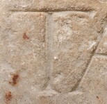

T - type1
- Script
- Latin
- Grapheme
- T
- Allograph
- type1
- Characteristic form:
-
- downstroke is straight
- downstroke is vertical
- top-bar is horizontal
Typology
More specific types
type1.1, type1.2, type1.3Exemplar

Origin: Thermae Himeraeae
between AD 1 and AD 400